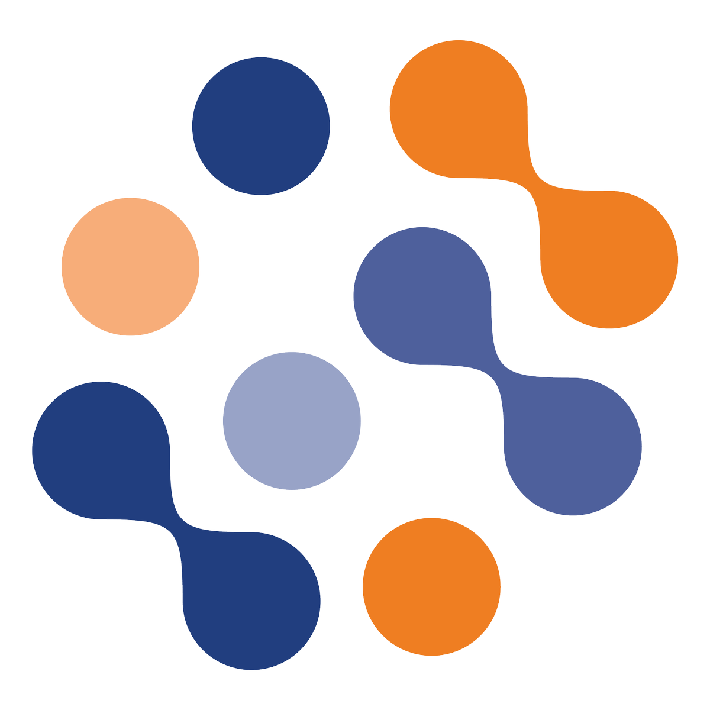

Overzicht
Innovatie
Binnen dit domein gaat de student zelf of in een (multidisciplinair) team actief opzoek naar nieuwe kennis en vaardigheden in functie van innovatie, onderzoek en ondernemen waarbij de verworven kennis en/of vaardigheden toegepast kunnen worden in projecten.
Internationalisering
Binnen dit domein wordt het perspectief op IT in een internationale context verruimd en wordt er rekening gehouden met de internationale context van het vakgebied.
Persoonlijke ontwikkeling
Binnen dit domein wordt er een e-portfolio aangelegd met daarin een persoonlijke en doelgerichte verzameling van materiaal dat de inspanningen, vooruitgang en prestaties in een bepaald domein weergeeft. Het hoofddoel van het portfolio is om te kunnen reflecteren over voortgang van het eigen leerproces als beginnend professional.
Seminaries
Binnen dit domein wordt het perspectief op IT in een business context verruimd. Via seminaries en workshops wordt er kennis gemaakt met nieuwe technieken, technologieën, … of wordt er geleerd hoe bestaande technieken, technologieën, … toegepast kunnen worden in projecten.
Extra's
Binnen dit domein wordt het engagement en de empassie getoond voor de hogeschool, de opleiding en medestudenten.
| Domein | Beschrijving | |
|---|---|---|
Sinterklaas programming challengeTijdens het vak Java Advanced, kregen we de mogelijkheid om aan een programming challenge deel te nemen. Er moest aan de hand van een gegeven technologie een probleem opgelost worden voor de sint. Ik heb niet enkel deelgenomen aan deze challenge, maar ik heb voor mijn resultaat ook een prijs gewonnen. Locatie: n.v.tDatum: 03/12/2018 - 04/12/18Duur: 2 uur |
||
Projectweek 18-19De projectweek was een druk ingeplande week met verschillende seminaries, infosessies en workshops. Het doel van deze week was om informatie te verkrijgen over het beloop van de studierichting, kennismaken met ieders groep voor het research project en jezelf beter leren kennen op sociaal vlak in het kader van groepsprojecten. Locatie: PXLDatum: 11/02/2019 - 15/02/2019Duur: 26 uur |
||
POP-sessiesDe POP-sessies bestonden uit drie verschillende sessies, "The key to improvement", "Brein aan het werk. Niet storen!" en "POPping". In deze seminaries kregen we uitleg hoe we efficiënt en gezond kunnen (samen)werken. Het bestond uit theoretische en praktische onderdelen om op die manier de onderwerpen aan ons te verduidelijken. Locatie: PXLDatum: 25/02/2019Duur: 10 uur |
||
AariXa - Docker for Dev and OpsHet seminarie werd gegeven door Sven Luts, een software engineer bij AariXa. De spreker gaf een introductie over Docker en zijn onderliggende werking. Door middel van demo's werden de nodige commando's aan ons uitgelegd en gedemonstreerd. Locatie: PXL, B141Datum: 27/02/2019Duur: 3 uur |
|
|
Belfius - Introduction to Artificial Intelligence Through PracticeWe kregen een introductie tot artificiële intelligentie door Jerome Fortias, AI practice leader bij BrightKnight. Er kwamen verschillende onderwerpen aan bod zoals de geschiedenis van artificiële intelligentie, de pilaren van artificiële intelligentie, het concept NoAI en verschillende demonstraties over deze onderwerpen. Locatie: PXL, B151Datum: 20/03/2019Duur: 3 uur |
|
|
Eurofins - Testing met Robot FrameworkSepp Van Cauwenbergh, technical coach bij Eurofins, gaf een zeer praktisch seminarie over het schrijven van automatische testen. Aangezien dit in kleinere groep doorging, was de mogelijkheid er om veel oefeningen te maken en deze klassikaal te overlopen, waardoor we beter tot de kern van het onderwerp konden komen. Locatie: PXL, Student HubDatum: 27/03/2019Duur: 3 uur |
 | |
Yappa - Piño: onder de schil, workshop introductie chatbotHet seminarie vond plaats in het bedrijf van Yappa, gelegen te Bilzen. Hier gaf Wesley Lancel, hub lead development bij Yappa, uitleg over Piño, de intern gebruikte chat assistant voor Slack. Met behulp van een demo werd verteld hoe Piño NLP gebruikt en hoe we op die manier zelf een chatbot konden maken. Locatie: Yappa, Eikaart 6 BilzenDatum: 03/04/2019Duur: 3 uur |
|
|
Quality@Speed - Performance testing: een levensnoodzakelijk ietsEr werd zowel een introductie tot performance als een introductie tot een performance-tool gegeven door Lisa-Marie Van Bel, functional analyst/consultant bij Quality@Speed, en Gil Vanderhoven, ICT-consultant bij Quality@Speed. Na deze introducties volgde een workshop om de geziene informatie over bijvoorbeeld Jmeter, praktisch te benaderen. Locatie: PXL, B241Datum: 24/04/2019Duur: 4 uur |
||
Ordina - IT Security & Data Privacy awareness sessionTom Degol en Jelle Dauwe, security consultants bij Ordina, gaven een theoretisch seminarie over information security awareness en GDPR. De aangehaalde onderwerpen waren zowel op professioneel vlak als in het privéleven nuttig. Om iedereen aandachtig te houden, werd af en toe een quiz gehouden over de geziene onderwerpen van de presentatie. Locatie: PXL, B151Datum: 15/05/2019Duur: 3 uur |
|
|
VRT NWS - Facebook en ikTim Verheyden, documentairemaker bij VRT NWS, doceerde een ontbijtseminarie. Hier bracht hij zijn onderzoek naar Facebook en hun omgang met privacy, democratie, ons welzijn, enz. aan. Ook de geschiedenis van hun ontstaan, de huidige stand van zaken en hun toekomstplannen lichtte hij ons toe. Locatie: PXL, CongressDatum: 22/05/2019Duur: 2 uur |
||
Innovatieroute - BlockchainDe eerste dag kregen we een introductie over blockchain en wat meer informatie over Ethereum van Maurice Dalderup, een ex-PXL-student met als functie blockchain architect bij Trase. De andere twee dagen kregen we uitleg over Hyperledger Fabric en moesten we een case per twee uitwerken hierover. De laatste dag werd het seminarie gegeven door Hadrien van Durme, een blockchain consultant bij Trase. Locatie: Corda 7, Project RoomDatum: 25/09/2019 - 27/09/2019Duur: 24 uur |
||
Infofarm - Internet of ThingsHet seminarie van Inforfarm ging over IoT, een (momenteel) zeer populair onderwerp. De aangehaalde onderwerpen bestonden uit het visualiseren van sensor data, onregelmatigheidsdetectie en wijzigingsdetectie. De nadruk lag voornamelijk op het verschil in bruikbaarheid tussen verwerkte en onverwerkte data. Locatie: PXL, B334Datum: 13/11/2019Duur: 3 uur |
||
Ericsson - Inleiding to 5GHet seminarie dat door Tijs Van den Brande en Serge Vanhoffelen, customer project managers 5G POC bij Ericsson, gegeven werd, ging niet enkel over de werking van 5G, maar ook over de geschiedenis van mobiele data, met inbegrip van de overgang van 1G naar 5G en de werking van elk van deze. Er waren geen demo's of andere praktische elementen voorzien: dit seminarie bestond enkel uit een theoretisch deel. Locatie: PXL, B323Datum: 27/11/2019Duur: 3 uur |
|
|
PwC - Secure developmentHet seminarie over secure development werd opgesplitst in twee delen: een theoretisch en een praktisch deel. Initieel werd er uitleg gegeven over of er rekening gehouden kan worden met het ontwikkelen van veilige software in korte cycli, ook wel sprints genaamd. In het tweede deel konden we deze technieken toepassen in een virtuele machine dat door PwC voorbereid was. Locatie: PXL, B214Datum: 04/12/2019Duur: 3 uur |
||
Studiereis - Berlijn (Technische Universität Berlin)De studiereis waaraan ik heb deelgenomen vond plaats in Berlijn. Hier waren verschillende culturele activiteiten geregeld zoals een tour in de stad, een rondleiding in een gevangenis door een ex-gevangene en een tour in een luchthaven. Het geplande bezoek en de seminaries in TU Berlin zijn jammer genoeg niet door kunnen gaan. Locatie: BerlijnDatum: 14/02/2020 - 18/03/2020Duur: 30 uur |
|
|
Care-athon - Ambulance WensTijdens de door PXL geörganiseerde hackathon heb ik gekozen voor de uitdaging van Ambulance Wens. Als eindresultaat werd een prototype en een (deels) uitgewerkte applicatie verwacht. Ambulance Wens vervult wensen van mensen waar het levenseinde nabij is en die niet meer mobiel zijn of medische hulp nodig hebben. Locatie: Corda 3, CegekaDatum: 20/02/2020 - 21/02/2020Duur: 26 uur |
|
|
LaTeX - Softwaresysteem voor het zetten van documentenNa veel opzoekwerk over LaTeX, kreeg ik reeds zin om het mezelf aan te leren en ermee te werken. Dit softwaresysteem gebruikte ik niet enkel om mijn eindwerk, maar ook mijn portfolio voor iTalent te schrijven. Ik legde mezelf op om deze techniek in voldoende mate onder de knie te krijgen om ze te kunnen toepassen wanneer dit nodig bleek. Locatie: n.v.t.Datum: 24/02/2020 - 20/04/2020Duur: 20 uur |
|
|
Website portfolio iTalentVoor het vak iTalent schreef ik mijn portfolio, om zo een overzicht te krijgen van mijn ervaringen die ik heb opgedaan gedurende de afgelopen 3 jaar. Omdat ik dit portfolio ook online beschikbaar wilde hebben en om dit ook mooier te kunnen presenteren dan een tekstdocument, heb ik ook een website geschreven. Zo leerde ik een statische responsieve website te maken met Bootstrap en het te hosten met GitHub Pages. Deze technologieën had ik voordien nog niet gebruikt. Locatie: n.v.t.Datum: 12/04/2020Duur: 12 uur |
|
| Domein | Minimum uren | Behaalde uren |
|---|---|---|
| 50 | 60 | |
| 30 | 30 | |
| 56 | 56 | |
| 24 | 29 | |
| / | 34 | |
| Totaal: | 160 | 209 |